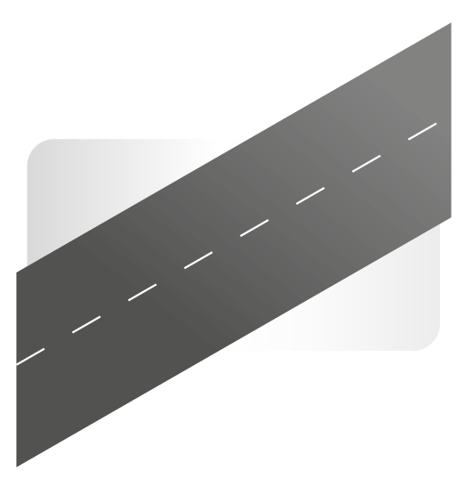

En Route !
Vous ne vous êtes jamais demandé combien de personnes empruntent chaque jour les mêmes routes que vous ? Avec qui partagez-vous le bus chaque matin, ou à qui appartient cette berline rouge que vous doublez tous les lundis ?
Dans votre département, la question des déplacements est devenue omniprésente, que l’on parle des bouchons de l’agglomération nantaise, ou de l’agrandissement de la Métropole. Ainsi, en 2015, vous accumuliez, tous ensemble, plus de 5 millions de déplacements quotidiens.
Grâce à une enquête menée par l’AURAN auprès de 20799 habitants de Loire-Atlantique, nous vous proposons de vous accompagner dans la découverte de ce qui fait votre département au jour le jour, la multiplicité de vos déplacements !
Scroll Down
And it will animate down to the first section




Scroll Down
And it will animate down to the fifth section